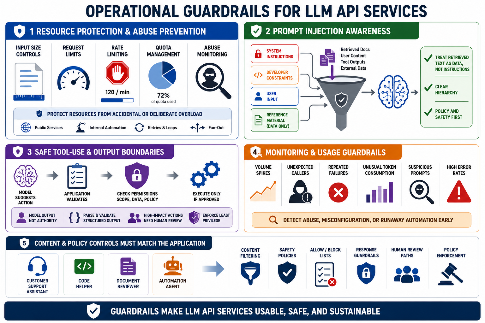

Safety, Abuse Resistance, and Operational Guardrails
Connecting to LMS... Progress: in progress

Narration
Operational guardrails help keep LLM API services usable and safe. Input size controls, request limits, rate limiting, quota management, and abuse monitoring protect resources from accidental or deliberate overload. These controls are not only for public services. Internal automation can loop, retry, or fan out in ways that create surprising cost and resource pressure.
Prompt injection awareness matters when applications include retrieved documents, user-generated content, tool outputs, or external data in prompts. Retrieved text should be treated as data to analyze, not as instructions that override the application's policy. The API design should separate system instructions, developer constraints, user input, and reference material so the model has a clearer hierarchy to follow.
Unsafe tool-use boundaries should be handled outside the model. If a model suggests an action, the application should validate permissions, scope, data, and policy before anything high impact occurs. Model output should not be treated as authority. Structured output should be parsed and validated before use, and high-impact workflows should include human review or additional approval paths.
Monitoring unusual usage patterns helps identify abuse, misconfiguration, or runaway automation. Look for spikes in request volume, unexpected callers, repeated failures, unusual token consumption, suspicious prompts, and high error rates. Content and policy controls should match the application. A customer support assistant, code helper, document reviewer, and automation agent each need different guardrails.